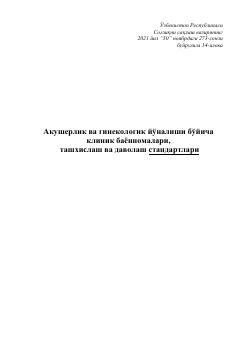

AVAkusherlik va ginekologiya sohasidagi davolash va tashxislash boʻyicha rasmiy klinik standartlar toʻplami.
Ushbu hujjat Oʻzbekiston Respublikasi Sogʻliqni saqlash vazirligining 2021-yildagi buyrugʻiga asosan tasdiqlangan akusherlik va ginekologiya yoʻnalishidagi klinik bayonnomalar, tashxislash va davolash standartlarini oʻz ichiga oladi. Qoʻllanmada homiladorlik patologiyalari, preeklampsiya va boshqa ginekologik holatlarni diagnostika qilish hamda davolash boʻyicha aniq koʻrsatmalar keltirilgan.